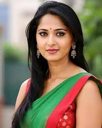

|
Sweety Shetty (born 7 November 1981), known by her stage name Anushka Shetty, is an Indian actress known for her works in Telugu and Tamil cinema. She is the recipient of three Filmfare Awards South, two Nandi Awards, two SIIMA Awards and one Tamil Nadu State Film Award. Having appeared over 50 films in a variety of roles, she is one of the highest-paid South Indian actresses.[3][4][5] She was honoured with Kalaimamani in 2010 by the Government of Tamil Nadu.[6][7] She made her acting debut with the 2005 Telugu film Super, which garnered her a Filmfare Best Supporting Actress – Telugu nomination.[8] The following year, she starred in S. S. Rajamouli's blockbuster hit Vikramarkudu. Her further releases Lakshyam (2007), Souryam (2008), and Chintakayala Ravi (2008) were also box office successes. In 2009, Shetty played dual roles in the Telugu dark fantasy film Arundhati, which led her to her first Filmfare Award for Best Actress – Telugu, and Nandi Award. The following year, Shetty's portrayal of a prostitute in the acclaimed drama Vedam won her a second consecutive Best Actress Award from Filmfare.[9][10] |
 |